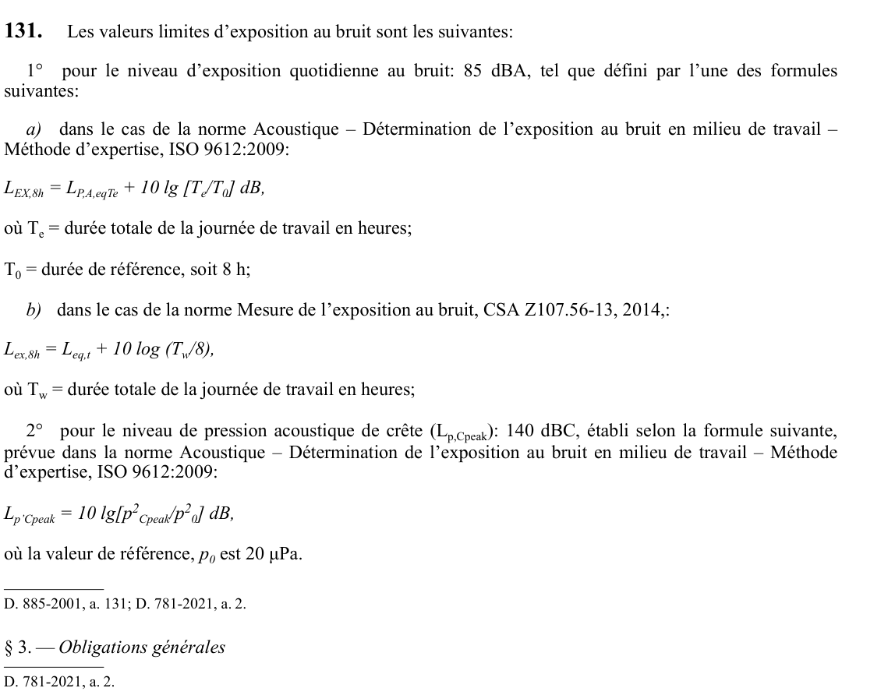

art-131-RSST : les valeurs limites d'exposition au bruit sont les
Un article du wiki ⚖️ Recueil législatif
En bref
Les valeurs limites d'exposition au bruit sont les suivantes: 1° pour le niveau d'exposition quotidienne au bruit: 85 dBA, tel que défini par l'une des formules suivantes: a) dans le cas de la norme Acoustique - Détermination de l'exposition au bruit en milieu de travail - Méthode d'expertise, ISO 9612:2009: LEX,8h = LP,A,eqTe + 10 lg [Te/T0] dB, où Te =...
🌐 LegisQuébec · 📄 PDF officiel
Texte officiel : capture du PDF
{kind=link}

Toucher l'image pour l'agrandir🔗 Voir art. 131 RSST dans le PDF (page 40) · texte à jour au 1er juin 2024
📚 Source légale : D. 885-2001, a. 131; D. 781-2021, a. 2. · LégisQuébec
Voir aussi
Pages qui pointent ici (7)
- art-130-RSST : la présente section établit les valeurs limites d'exposition Recueil législatif
- art-131-RSST Sécurité industrielle
- art-132-RSST : lors de la conception et de l'aménagement d'un Recueil législatif
- art-133-RSST : l'employeur doit, à tous les 5 ans, évaluer Recueil législatif
- art-135-RSST Sécurité industrielle
- art-141.1-RSST : les protecteurs auditifs fournis à un travailleur doivent Recueil législatif
- RSST : Section 15 : Bruit Recueil législatif